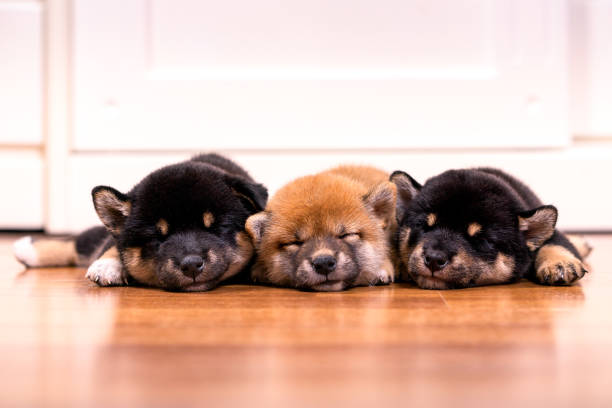
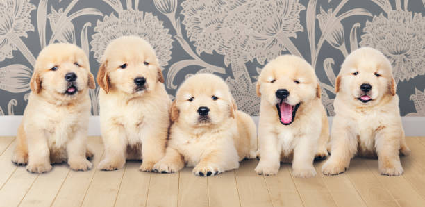
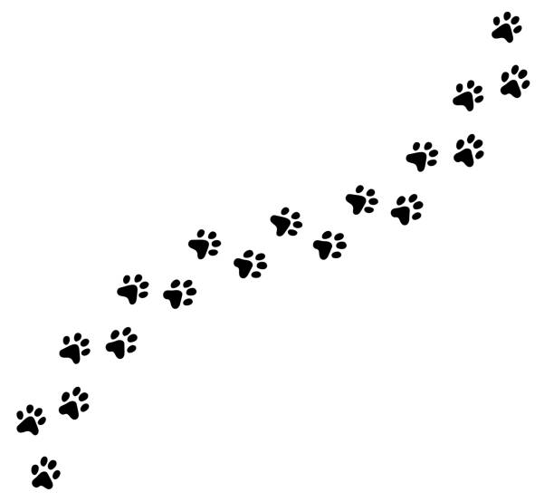

日本では、犬や猫を繁殖・販売するブリーダーは
「動物の愛護及び管理に関する法律（動愛法）」に基づく動物取扱業者として扱われ、
適切な飼育環境・健康管理・繁殖管理など、厳しい基準を満たす必要があります。
環境省は 2024 年の公式発表で、ブリーダーについて次のように説明しています：
「犬または猫を扱うブリーダーは、動物の愛護及び管理に関する法律の遵守状況を確認するため、
都道府県・政令指定都市による調査の対象となる。」
（環境省「ペットオークション・ブリーダーへの一斉調査結果について」2024年2月15日）
日本では、犬や猫を繁殖・販売するブリーダーは動物の愛護及び管理に関する法律（動愛法）に基づき、
都道府県・政令市・中核市への “登録” が義務付けられています。
環境省は次のように説明しています：
「第一種動物取扱業を営もうとする者は、都道府県等への登録が必要である。」
（環境省：動物の愛護及び管理に関する法律）
登録されたブリーダーは、飼育環境・繁殖回数・健康管理など、厳しい基準を守る義務があります。
| 基準項目 | 内容（環境省の基準） |
|---|---|
| 飼育環境 | 温度・湿度・清潔さ・広さなど、犬猫が健康に過ごせる環境を維持すること。 |
| 健康管理 | 定期的な健康チェック、ワクチン、治療、疾病予防を適切に行うこと。 |
| 繁殖管理 | 過剰繁殖の禁止。繁殖回数・年齢の制限を守ること（動愛法で規定）。 |
| 幼齢犬猫の販売規制 | 生後56日（8週齢）未満の販売は禁止。 |
| マイクロチップ | 装着と正確な登録が義務。 |
| 登録制度 | 第一種動物取扱業者として都道府県等に登録しなければ営業不可。 |
| 立入検査 | 自治体による年1回以上の立入検査に協力する義務。 |
| 違反時の措置 | 勧告 → 命令 → 業務停止 → 登録取消などの行政処分。 |
清潔・温度管理・十分な
スペース
ワクチン・治療・疾病予防
過剰繁殖の禁止・回数制限
装着と正確な登録